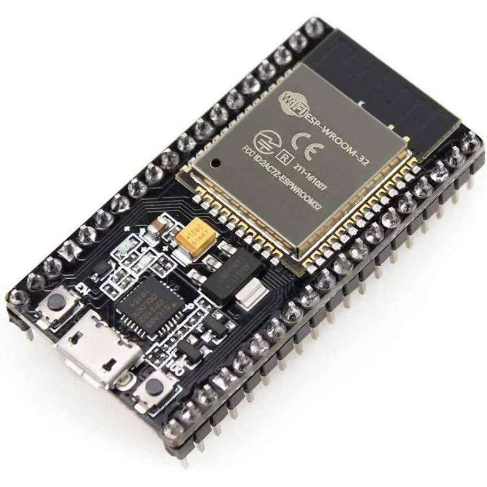

ESP32 Microcontroller
{kind=link}
Selecting the right ESP32 variant can be surprisingly tricky. There are dozens of versions—ESP32-C2, ESP32-S3, ESP32-WROVER, WROOM-32, and more—each with its own trade-offs in price, peripherals, core count, wireless support, and package size. After researching compatibility, availability, and feature sets, the ESP32-WROVER-IE was chosen for this project.
This module strikes an ideal balance for the Ma Bell Gateway:
✅ Dual-core processor (Xtensa LX6 @ up to 240 MHz) – The ESP32 includes two powerful cores. Core 0 is generally reserved for system-level tasks such as Wi-Fi and Bluetooth stacks, while Core 1 runs the user application logic (e.g. GPIO handling, tone generation, state machine transitions). This separation is key for real-time responsiveness.
✅ Built-in Wi-Fi and Bluetooth Classic – Both are essential. Wi-Fi is used to serve a real-time web-based status page, and Bluetooth Classic enables call connectivity via the Hands-Free Profile (HFP).
✅ PSRAM (typically 4MB) – The WROVER series includes external pseudo-static RAM, which can be used for audio buffering, logging, or memory-intensive tasks. While not mandatory for this project, it provides headroom for future expansion.
✅ FreeRTOS included – The ESP-IDF framework includes FreeRTOS as its built-in real-time operating system and exposes a rich API for multitasking, timers, and inter-task communication. The Ma Bell Gateway uses FreeRTOS to juggle Bluetooth events, off-hook signaling, tone generation, and status updates — all without blocking or missing real-time events.
✅ External antenna connector – The “IE” version includes a u.FL connector for an external antenna, ensuring strong signal coverage throughout the home.
Bluetooth Classic vs BLE
Although many ESP32 variants support Bluetooth Low Energy (BLE), this project requires Bluetooth Classic due to its support for audio via the Hands-Free Profile (HFP). BLE is optimized for short, energy-efficient data bursts (e.g. sensors, beacons), but it does not support voice or audio streaming. For this reason, only ESP32 modules that include Bluetooth Classic were considered.
Simultaneous Wi-Fi + Bluetooth
While Wi-Fi and Bluetooth share the same radio hardware, the ESP32 manages coexistence through fast time-sharing and protocol scheduling. With proper configuration:
Wi-Fi can serve the internal status page and support future OTA updates.
Bluetooth Classic can maintain a call session with a mobile phone.
System tasks and phone logic remain responsive, even during heavy traffic.
The ability to reliably run both wireless stacks alongside real-time GPIO handling was a key reason the WROVER-IE was selected.